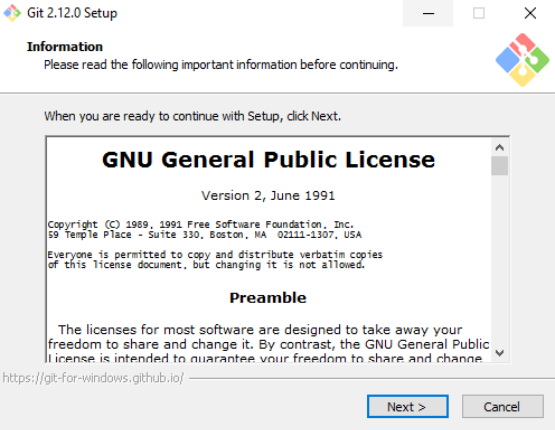

O Git é totalmente grátis e pode ser instalado em Mac, Linux, Windows e Solaris diretamente do site oficial. Algumas das características essenciais do GIT são:
>01)Um sistema de controle de versão distribuído, o GIT segue uma abordagem peer to peer, contrário de outros como o Subversion (SVN) que segue um modelo baseado em cliente-servidor. >02)GIT permite aos desenvolvedores ter uma infinidade de ramos de código completamente independente. Criação, exclusão e fusão desses ramos é simples e não leva tempo. >03)No GIT, todas as operações são atômicas. Isso significa que uma ação pode ter sucesso ou falhar (sem fazer nenhuma alteração). Isso é importante porque em alguns sistemas de controle de versão (como o CVS) onde as operações não são atômicas, se uma operação de repositório é suspensa, ela pode deixar o repositório em um estado instável. >04)No GIT, tudo é armazenado dentro da pasta .git. Isso não é o mesmo em outros VCS como SVN e CVS onde os metadadados de arquivos são armazenados em pastas ocultas (por exemplo, .cvs, .svn, etc.) >05)GIT usa um modelo de dados que ajuda a garantir a integridade criptográfica de qualquer coisa presente dentro de um repositório. Cada vez que um arquivo é adicionado ou um commit é feito, suas somas de verificação são geradas. Da mesma forma, eles são recuperados através de suas somas de verificação também. >06)Outra característica presente no GIT é sua área de teste ou índice. Na área de preparação, os desenvolvedores podem formatar commits e receber feedback antes de aplicá-los.01)Instalar o GIT no Windows é tão simples como baixar um instalador e executá-lo. Execute os seguintes passos para instalar o GIT no Windows: Acesse o site oficial e faça o download do instalador do GIT para Windows.
02)Depois de baixado, clique duas vezes no arquivo para iniciar o assistente de instalação. Basta seguir as instruções na tela, clicando em Next. Ao término, clique em Finish para concluir com êxito a instalação
03)Abra o prompt de comando e digite os seguintes comandos no terminal: